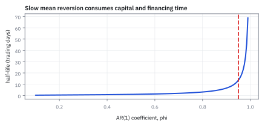
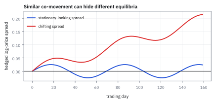

15.4 Pairs Trading and Cointegration
เทรดส่วนต่างของ log ราคาสองหุ้นได้ก็ต่อเมื่อมีหลักฐานว่าส่วนต่างถูกดึงกลับ และต้องรู้ว่ามันกลับช้าแค่ไหน หลักฐานอ่อนแค่ไหน และต้นทุนกินกำไรไปเท่าไร
หุ้น A ราคา \$42 หุ้น B ราคา \$28 hedge ratio 1.15 spread ของ log ราคามีค่าเฉลี่ยระยะยาว −0.025 และ SD 0.032 และถูกดึงกลับด้วยความเร็ว 0.05 ต่อวัน ซึ่งให้ half-life 13.9 วัน วันนี้ spread ต่ำกว่าค่าเฉลี่ย 2.17 SD เทรดเดอร์เข้า long spread แล้วตั้ง time stop ไว้ 14 วัน “เพราะ half-life คือ 13.9 วัน ภายในสองสัปดาห์มันต้องกลับแล้ว” ตั้งถูกไหม?
ลองตอบก่อนเปิดเฉลย
เหตุผลไม่ถูก half-life คือเวลาที่ระยะห่างโดยเฉลี่ยหดเหลือครึ่ง ไม่ใช่เวลาที่ไม้จะถึงเส้นออก ที่วันที่ 14 ค่าเฉลี่ยของ z ยังอยู่ที่ −1.08 ไกลจากเส้นออก −0.5 และเวลาถึงเส้นออกจริงเป็นตัวแปรสุ่ม เมื่อจำลอง 20,000 เส้นทางจาก z = −2.17 ตาม model เดียวกัน มีแค่ราว 36% ที่แตะเส้นออกภายใน 14 วัน median คือ 19 วัน และ 10% ใช้นานกว่า 45 วัน stop 14 วันจึงตัดไม้ราวสองในสามทิ้งก่อนถึงเส้นออก ทั้งที่ model ยังถูกอยู่ ถ้าจะใช้ time stop ต้องตั้งจากการกระจายของเวลาออกและต้นทุนการถือ ไม่ใช่จาก half-life
ภาพรวมก่อนลงสูตร
หุ้นสองตัวที่ทำธุรกิจเดียวกันมักขึ้นลงไปด้วยกัน บางวันตัวหนึ่งวิ่งนำไปก่อน ถ้ามีแรงที่ดึงสองราคากลับมาอยู่ในสัดส่วนเดิมเสมอ ช่องว่างที่ถ่างออกก็เป็นโอกาส: ซื้อตัวที่ถูกไป ขายตัวที่แพงไป แล้วรอให้ช่องว่างหุบ การขยับของตลาดทั้งตลาดหักกันเองระหว่างสองขา เหลือแต่เดิมพันเรื่องช่องว่าง
รูปด้านล่างเป็นข้อมูลจำลองที่สร้างให้ผูกกันจริง แผงบนคือราคาหุ้น A และ B ที่ลอยขึ้นลงไปด้วยกัน แผงล่างคือ spread ของ log ราคาในหน่วย SD (z-score) ที่แกว่งรอบศูนย์ เส้นแดงประคือเส้นเข้าที่ ±2 เส้นเขียวประคือเส้นออกที่ ±0.5 ปกติการถดถอยระดับราคาบนระดับราคาเป็นสิ่งต้องห้าม (spurious regression) ยกเว้นกรณีที่ส่วนต่างถูกดึงกลับจริง เรียกว่า cointegration และนั่นคือสิ่งที่ pairs trade เดิมพัน
หน้านี้จะนิยาม spread วัดว่าวันนี้มันห่างแค่ไหน ใช้ AR(1) วัดว่ามันกลับช้าแค่ไหน เชื่อมกับ OU process ทดสอบ cointegration ด้วย Engle–Granger และวัดว่าข้อมูลหนึ่งปีจับคู่จริงได้บ่อยแค่ไหน จากนั้นแปลงเป็นจำนวนหุ้น กำไรเป้าหมาย จำนวนครั้งที่ข้ามเส้น จุดตัดขาดทุน และต้นทุนที่กินกำไร
รูป — ราคาสองหุ้นที่ผูกกัน และ spread ที่แกว่งกลับพร้อมเส้นเข้าและเส้นออก
ศัพท์ที่ใช้ในหัวข้อนี้
- Pairs trading
- ซื้อหุ้นหนึ่งและ short อีกหุ้นในสัดส่วนที่ตัดการขยับร่วมกันออก เหลือแต่เดิมพันว่าส่วนต่างจะกลับเข้าหาค่าเฉลี่ย
- Spread
- $\ln P_A-h\ln P_B$ ตัวเลขตัวเดียวที่ใช้ตัดสินเข้า ออก และตัดขาดทุน
- Stationary
- ในความหมายอันดับสอง: ค่าเฉลี่ยและ variance คงที่ และ covariance ขึ้นกับระยะห่างของเวลา ไม่ใช่วันที่เริ่มวัด จึงมีระดับปกติให้อ้างอิง แต่ไม่ได้รับรองว่าทุกเส้นทางจะกลับถึงระดับนั้นในเวลาที่กำหนด
- Cointegration
- log ราคาแต่ละตัวเดินสุ่มแบบไม่มีระดับปกติ (มี unit root) แต่มีผลรวมเชิงเส้นของสองตัวที่ stationary ใช้เป็นหลักฐานว่าการวิเคราะห์ส่วนต่างรอบระดับปกติมีความหมาย ไม่ใช่หลักประกันกำไร
- Unit root
- กรณี $\phi=1$ ของ AR(1) ซึ่งส่วนต่างเป็น random walk ไม่มีแรงดึงกลับ เป็นสมมติฐานที่การทดสอบพยายามปฏิเสธ
- Engle–Granger test
- ถดถอย log ราคาหนึ่งบนอีกตัวเพื่อหา $h$ แล้วทดสอบ unit root ใน residual ด้วย Dickey–Fuller ถ้าเพิ่ม lag ของผลต่างเข้าไปเรียกว่า Augmented Dickey–Fuller (ADF)
- Half-life
- จำนวนวันที่ระยะห่างจากค่าเฉลี่ยคาดว่าจะหดเหลือครึ่ง ใช้บอกความเร็วของแรงดึงกลับ แต่ไม่ใช่เวลาที่ไม้จะถึงเส้นออก
สัญลักษณ์และหน่วย
| สัญลักษณ์ | ความหมาย | หน่วย |
|---|---|---|
| $P_A,\ P_B$ | ราคาปิดของหุ้น A และ B | USD ต่อหุ้น |
| $h$ | hedge ratio: slope ของ $\ln P_A$ บน $\ln P_B$ | ไม่มีหน่วย |
| $s_t,\ \mu,\ \sigma_s$ | spread ค่าเฉลี่ยระยะยาว และ SD ของระดับ spread | หน่วย log ราคา |
| $z_t,\ d_t$ | ระยะห่างจากค่าเฉลี่ยในหน่วย SD และในหน่วย log ราคา | SD และหน่วย log ราคา |
| $\phi,\ \kappa$ | สัมประสิทธิ์ AR(1) รายวัน และความเร็วดึงกลับ $\phi=e^{-\kappa}$ | ไม่มีหน่วย และต่อวัน |
| $t_{1/2},\ t_m$ | half-life และเวลาที่เส้นค่าเฉลี่ยถึงเส้นออก | วันซื้อขาย |
| $V_A,\ V_B$ | มูลค่าขา long A และขา short B | USD |
| $e_t,\ \gamma$ | residual ของการถดถอย log ราคา และ $\phi-1$ ในการทดสอบ | หน่วย log ราคา และไม่มีหน่วย |
ขั้นที่ 1 — นิยาม spread จาก log ราคา
ก่อนเทรดส่วนต่าง ต้องตกลงว่า “ส่วนต่าง” คืออะไร ถ้าใช้ $P_A-P_B$ ตรง ๆ ส่วนต่างจะโตตามระดับราคา เกณฑ์ที่ตั้งปีที่แล้วใช้ไม่ได้ปีนี้ จึงสมมติว่าราคาสองตัวผูกกันแบบสัดส่วน แล้วดูว่าอะไรคงที่
ข้อสมมติทั้งหมดอยู่ในบรรทัดแรก log เปลี่ยนเลขชี้กำลัง $h$ ให้เป็นตัวคูณ และเปลี่ยนผลคูณเป็นผลบวก บรรทัดที่สามบอกว่าถ้าความสัมพันธ์จริงเป๊ะ ส่วนต่างนี้คงที่ไม่ว่าราคาจะโตไปเท่าไร ของจริงไม่เป๊ะ $s_t$ จึงแกว่งรอบค่าเฉลี่ย $\mu$ และสิ่งที่เดิมพันคือการแกว่งกลับ
$h$ ไม่ได้เดา มันคือ slope ของ $\ln P_A$ บน $\ln P_B$ จาก OLS จึงเป็นค่าประมาณที่มีความคลาดติดมาเสมอ
ขั้นที่ 2 — วันนี้ spread อยู่ห่างค่าเฉลี่ยกี่ SD
โจทย์ให้อะไรมาบ้าง: ราคาสามวันล่าสุด (สมมติ) ในตารางด้านล่าง ใช้ $h=1.15$, $\mu=-0.025$, $\sigma_s=0.032$ ที่ตรึงจากช่วงฝึกซึ่งจบก่อนสามวันนี้ ไม่ได้ fit จากสามจุดนี้ ยังไม่มี position กติกาที่ตั้งไว้ก่อนดูข้อมูล: เข้าเมื่อข้ามออกนอก $|z|=2$ และออกเมื่อกลับเข้า $|z|\lt0.5$
| วัน | A (USD) | B (USD) | $s$ | $z$ |
|---|---|---|---|---|
| ก่อน 2 วัน | 41.00 | 26.00 | −0.033239 | −0.257 |
| ก่อน 1 วัน | 41.50 | 27.00 | −0.064519 | −1.235 |
| วันนี้ | 42.00 | 28.00 | −0.094366 | −2.168 |
คำตอบ: spread อยู่ที่ −0.0944 ต่ำกว่าเส้นเข้า −0.089 หรือ $z\approx-2.17$ ทั้งที่ราคาหุ้นทั้งคู่ขึ้นทุกวัน เพราะ B ขึ้นเร็วกว่าสัดส่วน 1.15 spread ต่ำเกินไปและเราอยากให้มันขึ้น การที่ $s=\ln P_A-h\ln P_B$ ขึ้นคือ A ขึ้นหรือ B ลง จึง long A และ short B ถ้านิยาม spread กลับด้านเป็น B เทียบ A เครื่องหมายจะกลับหมด อย่าท่องทิศ ให้ดูนิยามทุกครั้ง
ตรวจเองใน 10 วินาที: $-0.0944+0.025=-0.0694$ และ $0.0694/0.032\approx2.17$ ส่วนต่างที่ต้องเดินกลับถึงค่าเฉลี่ยคือ 0.0694 หน่วย log ราคา ตัวเลขนี้จะกลายเป็นกำไรเป้าหมายตอนแปลงเป็นเงิน
ขั้นที่ 3 — กลับช้าแค่ไหน: half-life ไม่ใช่เวลาถึงเส้นออก
สัญญาณอย่างเดียวไม่พอ ต้องรู้ว่าจะกลับเร็วแค่ไหน เพราะเงินถูกผูกไว้และค่ายืมหุ้นเดินทุกวัน model ที่ง่ายที่สุดที่มีแรงดึงกลับคือ AR(1): ระยะห่างวันนี้เป็นสัดส่วน $\phi$ ของเมื่อวาน บวก shock ใหม่ที่อิสระจากอดีตและมีค่าเฉลี่ยศูนย์ ให้ $\phi=e^{-0.05}\approx0.9512$ เรียกเวลาที่เส้นค่าเฉลี่ยถึงเส้นออกว่า $t_m$ แยกจากเวลาออกจริงที่สุ่ม
บรรทัดที่สามได้จากการหาค่าคาดหวังของบรรทัดที่สองซ้ำทีละวัน shock หายไปเพราะค่าเฉลี่ยเป็นศูนย์ เหลือการคูณ $\phi$ ซ้ำ ๆ ถาม “กี่วันจึงเหลือครึ่ง” แล้วใส่ log ทั้งสองข้างเพื่อดึงเลขชี้กำลังลงมา ทั้งเศษและส่วนติดลบ ผลจึงเป็นบวก
บนเส้นค่าเฉลี่ย การหดจาก 2.17 เหลือ 0.5 คือเหลือ 23% จึงใช้ราว 29.3 วัน วันที่ 14 ค่าเฉลี่ยของ z เป็น $z_0e^{-0.7}\approx-1.08$ แต่แต่ละเส้นทางมี shock จึงแตะเส้นออกเร็วหรือช้ากว่านี้มาก เมื่อจำลอง 20,000 เส้นทางจาก $z_0=-2.17$ เวลาแตะเส้นออกครั้งแรกมี median 19 วัน ค่าเฉลี่ย 23 วัน ควอไทล์ล่างและบน 12 กับ 30 วัน และ 10% ใช้เกิน 45 วัน ราว 36% แตะภายใน 14 วัน ค่า $t_m$ จึงไม่ใช่เวลาออกที่คาดหวัง และ half-life ยิ่งไม่ใช่
รูป — เส้นค่าเฉลี่ยค่อย ๆ หด แต่แต่ละไม้ถึงเส้นออกคนละวัน
รูป — half-life ไวมากเมื่อ φ ใกล้ 1

ขั้นที่ 4 — เชื่อมกับ OU process: SD ของ spread มาจากไหน
0.05 ต่อวันกับ 0.032 ไม่ได้เป็นอิสระต่อกัน ถ้ามองว่า spread เป็น OU process แบบเดียวกับ Vasicek ความเร็วดึงกลับกับขนาด shock จะกำหนด SD ระยะยาวให้ หาได้จากเงื่อนไขว่าใน stationary state ความแปรปรวนวันนี้เท่ากับเมื่อวาน
บรรทัดที่สามคือ variance ของสมการ AR(1) โดย $\eta_t$ อิสระจาก $d_{t-1}$ พจน์ไขว้จึงไม่มี บรรทัดที่ห้าคือ variance ของ shock ที่สะสมในหนึ่งวันจากคำตอบของ OU พอแทนลงไป $1-e^{-2\kappa}$ กับ $1-\phi^2$ เป็นตัวเดียวกันและตัดกัน
ถ้า shock ต่อเนื่องมี SD 1% ต่อวัน SD ระยะยาวคือ 0.0316 ใกล้ 0.032 ที่ใช้ กลับด้าน: SD 0.032 กับ $\phi=0.9512$ แปลว่า shock รายวันมี SD $0.032\sqrt{1-\phi^2}\approx0.00987$ ข้อสังเกตสำคัญคือ 0.032 เป็น SD ของระดับ spread ไม่ใช่ของการเปลี่ยนรายวัน ใครเอา SD ของการเปลี่ยนรายวันมาตั้งแถบ ±2 จะได้แถบแคบเกินไปกว่าสามเท่า
ขั้นที่ 5 — ทดสอบ cointegration: Engle–Granger และเกณฑ์ −3.37
ทุกอย่างข้างบนสมมติว่า spread ถูกดึงกลับจริง ถ้า $\phi=1$ spread เป็น random walk ค่าเฉลี่ยในอดีตไม่มีความหมาย และกลยุทธ์พัง Engle–Granger ทดสอบข้อนี้สองขั้น ขั้นแรกหา $h$ ด้วย OLS ของ log ราคา ขั้นที่สองถาม residual ว่ามีแรงดึงกลับหรือไม่ (stationarity)
ลบ $e_{t-1}$ ออกทั้งสองข้างของบรรทัดที่สอง ได้บรรทัดที่สามที่เป็น regression ธรรมดา ถ้า $\gamma=0$ คือ unit root ไม่มีแรงดึงกลับ ถ้า $\gamma\lt0$ ระยะห่างถูกดึงกลับทุกวัน ปฏิเสธ unit root เมื่อ $t_\gamma$ ต่ำกว่า −3.37 ADF เพิ่ม lag ของ $\Delta e$ เข้าไปรับ autocorrelation ที่เหลือ ส่วนโค้ดท้ายหน้าใช้แบบไม่มี lag
ทำไมไม่ใช้ −1.645 ของ t ธรรมดา? สองชั้น ภายใต้ unit root สถิติ $t$ ไม่ได้มี distribution แบบ Student t แต่เบ้ไปทางลบ และ $h$ ถูกเลือกด้วย OLS ให้ residual ดูนิ่งที่สุดอยู่แล้ว เกณฑ์จึงต้องเข้มขึ้น การจำลองคู่ที่ spread เป็น random walk 2,000 คู่ คู่ละ 250 วัน ได้ $t_\gamma\lt-3.37$ เพียง 4.9% ตรงกับระดับ 5% ที่ตั้งใจ
ทำไมไม่เลือกคู่จาก correlation ของผลตอบแทนรายวัน? เพราะ correlation วัดการขยับรายวัน ส่วน cointegration วัดว่าระดับของส่วนต่างถูกดึงกลับ คู่ในรูปภาพรวมมี correlation ของผลตอบแทนรายวันแค่ 0.81 แต่ผูกกันจริง ส่วนรูปด้านล่างมีสองคู่ที่การขยับรายวันต่างกันแค่ค่าคงที่ แต่คู่หนึ่งหนีไปไม่กลับ
รูป — spread ที่นิ่ง เทียบกับ spread ที่ไหลหนี

ขั้นที่ 6 — ข้อมูลหนึ่งปีจับคู่จริงได้บ่อยแค่ไหน
โจทย์ให้อะไรมาบ้าง: จำลองคู่ที่ cointegrate จริงตามตัวเลขของหน้านี้: log ราคา B เป็น random walk ที่ก้าวรายวัน SD 2% log ราคา A คือ $-0.025+1.15\ln P_B+d_t$ โดย $d_t$ เป็น AR(1) ที่ $\phi=0.9512$ และ SD ระยะยาว 0.032 แล้วใช้การทดสอบ Engle–Granger นับว่ากี่ครั้งที่ปฏิเสธ unit root (seed ตายตัวในโค้ดท้ายหน้า)
| ข้อมูล | จำนวนคู่ที่จำลอง | สัดส่วนที่ $t_\gamma\lt-3.37$ |
|---|---|---|
| คู่ที่ spread เป็น random walk 250 วัน | 2,000 | 4.9% |
| คู่จริง 250 วัน (ราวหนึ่งปี) | 2,000 | 30.7% |
| คู่จริง 500 วัน | 2,000 | 83.6% |
| คู่จริง 1,000 วัน | 1,000 | 100% |
คำตอบ: ในการจำลองชุดนี้ คู่ที่สร้างให้ดึงกลับด้วย half-life 13.9 วัน ถูกตรวจพบจากข้อมูลหนึ่งปีเพียง 30.7% ของครั้ง อีกเกือบ 70% การทดสอบบอกว่า “ปฏิเสธ unit root ไม่ได้” ทั้งที่กระบวนการที่สร้างมี cointegration การไม่ผ่านจึงไม่ได้แปลว่าไม่มี cointegration และการผ่านก็ยังเป็นแค่หลักฐานจากตัวอย่างเดิม ไม่ได้รับประกันอนาคต
ตรวจเองใน 10 วินาที: ความคลาดของการนับ 2,000 ครั้งที่ 5% คือราว $\sqrt{0.05(0.95)/2000}\approx0.5\%$ 4.9% จึงเข้ากับ 5% ส่วน 30.7% กับ 83.6% ห่างกันเกินความคลาดจากการสุ่มมาก ข้อมูลที่ยาวขึ้นช่วยจริง
รูป — ยิ่งข้อมูลยาว ยิ่งจับคู่จริงได้
ขั้นที่ 7 — ขนาดสองขา กำไรเป้าหมาย และทำไมขาต้องไม่เท่ากัน
ขาของ B ต้องใหญ่กว่า A เท่าไรกำไรจึงขึ้นกับ spread อย่างเดียว? ใช้ว่ากำไรของแต่ละขาประมาณได้ด้วยมูลค่าคูณการเปลี่ยนของ log ราคา เมื่อการขยับไม่ใหญ่ (log return ใกล้เคียงผลตอบแทนธรรมดา) long A มูลค่า $V_A$ short B มูลค่า $V_B$
ใส่ $V_B=hV_A$ ได้ $V_A(\Delta\ln P_A-h\Delta\ln P_B)=V_A\Delta s$ จึงหักองค์ประกอบร่วมตาม $h$ ที่ตรึงไว้ พอร์ต short มากกว่า long \$150,000 โดยตั้งใจ การลงเงินเท่ากันไม่ใช่ hedge เดียวกัน ถ้าออกที่เส้นออก $s=-0.041$ แทนค่าเฉลี่ย $\Delta s=0.053366$ กำไรราว \$53,366 ทั้งสองตัวเลขเป็นการประมาณก่อนต้นทุน ไม่ใช่กำไรรับประกัน และไม่ได้พิสูจน์ว่าไม่มีความเสี่ยง ถ้า $h$ เปลี่ยนหรือความสัมพันธ์ขาด ก็ยังขาดทุนได้
ลองกับราคาจริง: ถ้า spread กลับถึงค่าเฉลี่ยผ่าน A ขาเดียว A ต้องขึ้นไป $42e^{0.069366}\approx45.02$ ได้ \$71,829 ถ้าผ่าน B ขาเดียว B ต้องลงไป $28e^{-0.069366/1.15}\approx26.36$ ได้ \$67,314 ตัวเลขเส้นตรง \$69,366 อยู่ระหว่างกลาง เพราะผลตอบแทนแบบ simple กับแบบ log ต่างกัน เทียบกับ gross \$2.15 ล้าน คือราว 3.23%
ขั้นที่ 8 — วันนอกแถบ การข้ามเส้น และจำนวนไม้ เป็นคนละเรื่อง
ถ้า z เป็น Normal มาตรฐาน วันที่ $|z|\gt2$ มีสัดส่วนคาดหมาย 4.55% ของปี คนมักคูณด้วย 252 วันซื้อขายแล้วเรียกว่า 11 สัญญาณต่อปี แต่วันติดกันมี correlation $\phi=0.951$ วันที่เลยเส้นจึงมาเป็นกลุ่ม ดังที่เห็นในรูปภาพรวมที่ z อยู่ใต้ −2 ติดกันหลายวัน ต่อไปจะนับการข้ามเส้นล่างจากเหนือ −2 ไปต่ำกว่า −2 และการข้ามเส้นบนแบบสมมาตร
integral ใช้ conditional distribution ของ MVN: เมื่อรู้ว่าเมื่อวาน $z_{t-1}=u$ ค่าวันนี้เป็น Normal ที่ค่าเฉลี่ย $\phi u$ และ SD $\sqrt{1-\phi^2}$ โอกาสที่จะต่ำกว่า −2 จึงเป็น $\Phi(a(u))$ แล้วเฉลี่ยทุกค่า $u$ ที่เมื่อวานยังไม่ต่ำกว่าเส้นล่าง โค้ดท้ายหน้าใช้ Simpson คำนวณ integral นี้ คูณ 2 เพราะมีทั้งฝั่งบนและล่าง
ผลคือการข้ามเส้นเข้าเขตหางรวมสองฝั่งราว 3.35 ครั้งต่อปี ไม่ใช่ 11.5 อัตราส่วน $11.5/3.35\approx3.4$ คือจำนวนวันนอกแถบต่อการข้ามหนึ่งครั้ง และ 3.35 ก็ยังไม่ใช่จำนวนไม้ที่เปิดได้จริง เพราะบางครั้งข้ามเส้นระหว่างที่ยังถือไม้เดิมอยู่ จำนวนไม้ต้องจำลองพร้อมกฎเข้า ออก และ stop ถ้าสมมติให้ทุกการข้ามทำกำไรถึงค่าเฉลี่ย 3.23% ของ gross จะคูณได้ $3.35\times3.23\%\approx10.8\%$ ต่อปี แต่นี่เป็นเพดานในฝัน ไม่ใช่ประมาณการ เพราะยังไม่รวมไม้ที่ซ้อนกัน ไม้ที่ขาดทุน และต้นทุน
ขั้นที่ 9 — ตั้งจุดตัดขาดทุนก่อนเข้า ไม่ใช่หลังขาดทุน
ฉากที่กลยุทธ์นี้ตายคือ spread กว้างขึ้นแทนที่จะแคบลง เพราะความสัมพันธ์ขาด เช่นมีข่าวควบรวมหรือหุ้นตัวหนึ่งเปลี่ยนธุรกิจ และขา short ไม่มีเพดานขาดทุน เพราะราคาหุ้นขึ้นได้ไม่จำกัด ต้องตั้งทั้งจุดตัดราคาและจุดตัดเวลาไว้ก่อนส่งคำสั่ง
ถ้า z วิ่งจาก −2.17 ไป −4 ขาดทุนประมาณ \$58,634 คือ 84.5% ของเป้ากลับถึงค่าเฉลี่ย และมากกว่าเป้าที่เส้นออก \$53,366 ถ้า spread เป็น Normal นิ่งจริง โอกาส $|z|\gt4$ ณ วันหนึ่งอยู่ราว $6\times10^{-5}$ เหตุการณ์หายากแบบนี้เป็นสัญญาณให้ตรวจว่าความสัมพันธ์ขาดหรือยัง แต่ไม่ได้พิสูจน์ว่าขาดแล้ว
ที่ 40 วัน ค่าเฉลี่ยแบบยังไม่คัดเส้นทางอยู่ที่ −0.29 แต่ไม้ที่ยังไม่เคยแตะเส้นออกเป็นกลุ่มที่ถูกคัดมาแล้ว จึงใช้ตัวเลขนี้พิสูจน์ว่า model ผิดไม่ได้ การจำลองเวลาออกข้างต้นบอกว่าราว 10% ของไม้ใช้นานกว่า 45 วันแม้ model ถูก stop ราคา stop เวลา และขนาดต่อคู่ เช่น 2% ของ NAV เป็นนโยบายควบคุมความเสี่ยง ต้องประเมินร่วมกับต้นทุนและข้อมูล ไม่ได้อนุมานว่าดีที่สุดจากสูตร half-life
รูป — กำไรขาดทุนของไม้เป็นเส้นตรงของ z ตอนปิด
ขั้นที่ 10 — ต้นทุนที่กินกำไร: ค่าซื้อขาย ค่ายืมหุ้น และหุ้นที่ยืมไม่ได้
โจทย์ให้อะไรมาบ้าง: ไม้เดิม gross \$2.15 ล้าน สมมติค่าซื้อขายรวม spread และผลกระทบราคา 5 basis points ต่อการซื้อขายหนึ่งครั้ง (สมมติ) เปิดสองขาและปิดสองขา ถือนานเท่า median ของเวลาออกคือ 19 วันซื้อขาย ซึ่งเท่ากับราว $19\times365/252\approx27.5$ วันปฏิทิน (252 วันซื้อขายต่อ 365 วันปฏิทินของตลาดสหรัฐฯ) ค่ายืมหุ้น B คิดเป็น % ต่อปีตามวันปฏิทิน ปกติราว 0.5% ต่อปี แต่หุ้นที่คนแย่งกันยืมอาจถึง 20% ต่อปี
คำตอบ: หุ้นที่ยืมง่ายมีต้นทุนรวมราว \$2,600 หรือ 5% ของกำไรเป้าหมายที่เส้นออก แต่ถ้า B ยืมยาก ต้นทุนพุ่งเป็นราว \$19,500 หรือ 36.5% ของเป้า ทั้งที่สัญญาณเหมือนเดิมทุกอย่าง ค่าซื้อขายยังโตเร็วกว่าเส้นตรงเมื่อขนาดไม้ใหญ่ขึ้นเทียบกับปริมาณซื้อขายรายวันของหุ้น เพราะผลกระทบราคาขึ้นกับสัดส่วนที่เราเข้าไปซื้อขาย (Almgren–Chriss)
กรณีสุดขั้วคือส่วนต่างที่ “ต้องหุบแน่ ๆ” แต่เทรดไม่ได้ ตอนที่ 3Com นำ Palm เข้าตลาดในปี 2000 โดยขายหุ้นออกไปแค่ 5% Palm มีมูลค่าตลาด \$54 พันล้าน ส่วน 3Com ที่ยังถือ Palm อีก 95% มีมูลค่าแค่ \$28 พันล้าน แปลว่าตลาดตีราคาธุรกิจที่เหลือของ 3Com ไว้ราว $28-0.95(54)=-\$23.3$ พันล้าน ซึ่งเป็นไปไม่ได้ แต่หุ้น Palm ที่หมุนเวียนในตลาดมีน้อยมาก ค่ายืมสูงจนแทบยืมไม่ได้ ช่องว่างจึงค้างอยู่หลายเดือน สัญญาณถูก แต่ต้นทุนและข้อจำกัดในการ short ทำให้กำไรไม่ได้
ตรวจเองใน 10 วินาที: $1.15\text{M}\times20\%=230{,}000$ ต่อปี หารด้วย 365 ได้ราว \$630 ต่อวัน คูณ 27.5 วันได้ราว \$17,300
ความผิดที่ทำให้กลยุทธ์ดูดีกว่าความจริง
ใช้ half-life แทนเวลาออกจริง: ถ้าถือคงไว้ถึงวันที่ 14 โดยไม่ใช้กฎออกหรือ stop ระหว่างทาง ค่าเฉลี่ยของ z คือ −1.08 และกำไรคาดหมายแบบ log-linear ราว \$34,900 ก่อนต้นทุน แต่การจำลองบอกว่ามีแค่ราว 36% ที่ถึงเส้นออกภายในวันนั้น time stop ที่ตั้งจาก half-life จะตัดไม้ส่วนใหญ่ก่อนเวลา
ลงเงินสองขาเท่ากัน: long A \$1 ล้าน short B \$1 ล้าน กำไรจะเป็น $V_A\Delta s+0.15V_A\Delta\ln P_B$ ถ้า B ขึ้น 10% โดย spread ไม่ขยับ พอร์ตได้ราว $1{,}000{,}000(0.15)(0.0953)\approx\$14{,}300$ จากการเดิมพันทิศทางของ B ที่ไม่ได้ตั้งใจ ถ้า B ลง พจน์นี้จะทำให้เสียแทน
นับวันหรือการข้ามเส้นเป็นจำนวนไม้: 11.5 คือจำนวนวันนอกแถบที่คาด และ 3.35 คือจำนวนการข้ามเส้นที่คาด ไม่ใช่ผลนับไม้ใน backtest ต้องใส่สถานะที่ถืออยู่ กฎออก stop และต้นทุนก่อนคำนวณผลตอบแทน
ใช้ค่าเฉลี่ยและ SD จากข้อมูลทั้งชุด: ถ้าคำนวณ $\mu$, $\sigma_s$ หรือ $h$ จากข้อมูลทั้งหมดรวมช่วงที่ใช้ทดสอบ backtest จะรู้ล่วงหน้าว่าระดับปกติของอนาคตอยู่ตรงไหน กลยุทธ์จะดูดีในการทดสอบแล้วพังตอนใช้จริง ค่าทุกตัวต้องมาจากข้อมูลที่มีอยู่จริง ณ วันที่ตัดสินใจเท่านั้น
ลองหลายคู่แล้วเลือกคู่ที่ผ่าน: ทดสอบคู่ที่ไม่ผูกกันเลย 100 คู่ที่ระดับ 5% คาดว่าจะผ่านโดยบังเอิญ 5 คู่ และโอกาสที่จะมีอย่างน้อยหนึ่งคู่ผ่านคือ $1-0.95^{100}\approx99.4\%$ คู่ที่ผ่านต้องมีเหตุผลทางธุรกิจรองรับ และต้องผ่านอีกครั้งในข้อมูลช่วงใหม่ (multiple testing)
ใช้ทำอะไรบนโต๊ะจริง
โต๊ะ statistical arbitrage ใช้ขั้นตอนนี้กับคู่ที่มีเหตุผลทางธุรกิจว่าควรผูกกัน เช่นบริษัทในธุรกิจเดียวกัน หุ้นสองชั้นของบริษัทเดียวกัน หรือ ETF กับตะกร้าหุ้นข้างใน ลำดับงานคือประมาณ $h$ บนช่วงข้อมูลหนึ่ง ทดสอบ residual ตรึงค่าเฉลี่ย SD เส้นเข้า เส้นออก จุดตัดราคาและเวลา แล้วค่อยเทรดในช่วงถัดไปที่ไม่ได้ใช้ประมาณ และทบทวนทุกค่าเป็นระยะ ทีมของ Nunzio Tartaglia ที่ Morgan Stanley ทำแบบนี้ด้วยคอมพิวเตอร์ตั้งแต่กลางทศวรรษ 1980 ส่วนเครื่องมือทดสอบมาทีหลังจาก Engle และ Granger ในปี 1987 งานจริงยังขยายจากคู่ไปเป็นหุ้นหนึ่งตัวเทียบตะกร้าที่สร้างจาก factor model แล้วเทรด residual เฉพาะตัวแทน
โจทย์ตรวจความเข้าใจ
1. ถ้าวันนี้ A ราคา \$44 และ B ยัง \$28 ควรเข้าเทรดไหม
เฉลย
$s=\ln44-1.15\ln28=3.784190-3.832035\approx-0.047846$ และ $z=(-0.047846+0.025)/0.032\approx-0.71$ ยังอยู่ในแถบ ±2 จึงไม่เข้า
2. ถ้าประมาณ $\phi$ ได้ 0.98 ต่อวันแทน 0.9512 half-life และเวลาที่เส้นค่าเฉลี่ยถึงเส้นออกจาก $z=-2.168$ เป็นเท่าไร
เฉลย
$t_{1/2}=\ln0.5/\ln0.98\approx34.3$ วัน และ $t_m=\ln(2.1677/0.5)/(-\ln0.98)\approx1.4667/0.0202\approx72.6$ วัน ช้ากว่าเดิมราว 2.5 เท่า ทั้งที่ $\phi$ ต่างกันแค่ 0.029 ค่ายืมหุ้นตามจำนวนวันก็โตตามราว 2.5 เท่า และเวลาออกจริงยังกระจายกว้างกว่า $t_m$ อีก
3. ถ้าลงขา A \$3 ล้าน ต้อง short B กี่หุ้น กำไรแบบเส้นตรงถ้ากลับถึงค่าเฉลี่ยเต็มทางเป็นเท่าไร และถ้า z วิ่งไปโดน stop ที่ −4 ขาดทุนเท่าไร
เฉลย
ขา B คือ $1.15\times3=\$3.45$ ล้าน ซื้อ A $3{,}000{,}000/42\approx71{,}429$ หุ้น short B $3{,}450{,}000/28\approx123{,}214$ หุ้น กำไรเป้าหมาย $3{,}000{,}000(0.069366)\approx\$208{,}097$ และขาดทุนที่ stop $3\times58{,}634\approx\$175{,}903$ ทุกอย่างเป็นสามเท่าของเดิมพอดี เพราะเป็นเส้นตรงใน $V_A$ ยกเว้นค่าซื้อขายที่โตเร็วกว่าเส้นตรงเมื่อไม้ใหญ่ขึ้น
คำนวณซ้ำด้วย JavaScript
รันใน Node.js ได้โดยไม่ต้องติดตั้งอะไร โค้ดคำนวณ spread, z, half-life, เวลาที่เส้นค่าเฉลี่ยถึงเส้นออก, การกระจายของเวลาแตะเส้นออกจากการจำลอง 20,000 เส้นทาง, ขนาดสองขา, กำไรและขาดทุนที่จุดต่าง ๆ, ต้นทุน, จำนวนการข้ามเส้นด้วย Simpson และจำลองการทดสอบ Engle–Granger ด้วย seed ตายตัว ใช้เวลารันราวหนึ่งวินาที โค้ดนี้ไม่ใช่ backtest ผลตอบแทนกลยุทธ์
เปิดดูโค้ด
function positive(...values) {
if (!values.every(v => Number.isFinite(v) && v > 0)) throw new RangeError('Prices, sizes and speeds must be positive numbers');
}
// Spread of log prices, and how many standard deviations it sits from its long-run mean.
function spreadZ(priceA, priceB, h, mean, sd) {
positive(priceA, priceB, h, sd);
if (!Number.isFinite(mean)) throw new TypeError('Mean must be a finite number');
const s = Math.log(priceA) - h * Math.log(priceB);
return {s, z: (s - mean) / sd};
}
// AR(1) with coefficient phi = exp(-kappa): expected deviation shrinks by phi each day.
function reversion(kappa) {
positive(kappa);
const phi = Math.exp(-kappa);
return {phi, halfLife: Math.log(0.5) / Math.log(phi), daysTo: (z0, z1) => Math.log(Math.abs(z0 / z1)) / kappa};
}
function legs(valueA, h, priceA, priceB) {
positive(valueA, h, priceA, priceB);
const valueB = h * valueA;
return {valueB, sharesA: Math.round(valueA / priceA), sharesB: Math.round(valueB / priceB), gross: valueA + valueB, net: valueA - valueB};
}
const {exp, sqrt, log, sin, cos, imul, PI} = Math; // local names: hot loops below avoid global lookups
const phiN = x => exp(-x * x / 2) / sqrt(2 * PI);
function simpson(f, lo, hi, n = 4000) {
const w = (hi - lo) / n;
let sum = 0;
for (let i = 0; i <= n; i++) sum += (i === 0 || i === n ? 1 : i % 2 ? 4 : 2) * f(lo + i * w);
return sum * w / 3;
}
const Phi = x => Math.abs(x) > 10 ? (x > 0 ? 1 : 0) : 0.5 + Math.sign(x) * simpson(phiN, 0, Math.abs(x), 400);
// Days beyond +-z and raw threshold crossings, not executable trade entries.
// Lower crossing: yesterday > -z, today < -z; the upper side is symmetric.
function signalCount(z, rho, days) {
if (!(z > 0) || !(Math.abs(rho) < 1) || !(days > 0)) throw new RangeError('Need z > 0, |rho| < 1 and a positive day count');
const tail = 2 * Phi(-z);
const crossOneSide = simpson(z1 => phiN(z1) * Phi((-z - rho * z1) / sqrt(1 - rho * rho)), -z, 10, 4000);
return {tail, daysBeyond: days * tail, entries: 2 * days * crossOneSide, daysPerEpisode: tail / (2 * crossOneSide)};
}
// Seeded standard normals (mulberry32 + Box-Muller).
function normals(seed) {
let a = seed >>> 0, spare = null;
const u = () => {
a = (a + 0x6D2B79F5) >>> 0;
let t = imul(a ^ (a >>> 15), a | 1);
t ^= t + imul(t ^ (t >>> 7), t | 61);
return (((t ^ (t >>> 14)) >>> 0) + 0.5) / 4294967296;
};
return () => {
if (spare !== null) { const q = spare; spare = null; return q; }
const r = sqrt(-2 * log(u())), q = 2 * PI * u();
spare = r * sin(q);
return r * cos(q);
};
}
// First day the AR(1) z-score climbs from z0 back to the exit line, over many simulated paths.
function firstHit(z0, exitZ, phi, runs, seed) {
if (!(z0 < exitZ) || !(phi > 0 && phi < 1) || !Number.isInteger(runs) || runs < 100) {
throw new RangeError('Need z0 below the exit line, 0 < phi < 1 and at least 100 runs');
}
const g = normals(seed), sz = sqrt(1 - phi * phi), hits = [];
let by14 = 0;
for (let k = 0; k < runs; k++) {
let z = z0, t = 0;
while (z < exitZ && t < 2000) { z = phi * z + sz * g(); t++; }
hits.push(t);
if (t <= 14) by14++;
}
hits.sort((p, q) => p - q);
const q = f => hits[Math.floor(f * runs)];
return {median: q(0.5), mean: hits.reduce((s, v) => s + v, 0) / runs, p25: q(0.25), p75: q(0.75), p90: q(0.9), shareBy14: by14 / runs};
}
// Engle-Granger: OLS of log A on log B, then a Dickey-Fuller regression of the residual's change on its lagged level.
function engleGranger(logA, logB) {
if (!Array.isArray(logA) || !Array.isArray(logB) || logA.length !== logB.length || logA.length < 20) {
throw new RangeError('Need two log-price series of the same length, at least 20 days');
}
if (![...logA, ...logB].every(Number.isFinite)) throw new TypeError('Log prices must be finite');
const n = logA.length, ma = logA.reduce((s, v) => s + v, 0) / n, mb = logB.reduce((s, v) => s + v, 0) / n;
let sxy = 0, sxx = 0;
for (let t = 0; t < n; t++) { sxy += (logB[t] - mb) * (logA[t] - ma); sxx += (logB[t] - mb) ** 2; }
const h = sxy / sxx, c = ma - h * mb, e = logA.map((v, t) => v - c - h * logB[t]);
let num = 0, den = 0;
for (let t = 1; t < n; t++) { num += e[t - 1] * (e[t] - e[t - 1]); den += e[t - 1] ** 2; }
const gamma = num / den;
let ss = 0;
for (let t = 1; t < n; t++) ss += (e[t] - e[t - 1] - gamma * e[t - 1]) ** 2;
return {h, gamma, t: gamma / Math.sqrt(ss / (n - 2) / den)};
}
// Share of simulated pairs whose Engle-Granger t falls below the critical value.
function egPower(runs, days, phi, seed, critical = -3.37) {
if (!Number.isInteger(runs) || runs < 100 || !Number.isInteger(days) || days < 20) throw new RangeError('Use at least 100 runs of at least 20 days');
if (!(phi > 0 && phi <= 1)) throw new RangeError('phi must lie in (0, 1]');
const z = normals(seed), sd = 0.032, step = phi < 1 ? sd * Math.sqrt(1 - phi * phi) : 0.00987;
let reject = 0;
for (let k = 0; k < runs; k++) {
let lb = Math.log(28), x = phi < 1 ? sd * z() : 0;
const la = [], lbs = [];
for (let t = 0; t < days; t++) {
lb += 0.02 * z(); x = phi * x + step * z();
lbs.push(lb); la.push(-0.025 + 1.15 * lb + x);
}
if (engleGranger(la, lbs).t < critical) reject++;
}
return reject / runs;
}
const today = spreadZ(42, 28, 1.15, -0.025, 0.032), rev = reversion(0.05), book = legs(1e6, 1.15, 42, 28);
const gap = -0.025 - today.s, upA = 42 * Math.exp(gap), downB = 28 * Math.exp(-gap / 1.15);
const pnlAt = z => 1e6 * 0.032 * (z - today.z), calendarDays = 19 * 365 / 252;
console.log(JSON.stringify({
today, bands: {entry: -0.025 - 2 * 0.032, exit: -0.025 - 0.5 * 0.032},
reversion: {phi: rev.phi, halfLife: rev.halfLife, toExit: rev.daysTo(today.z, -0.5), zAt14: today.z * Math.exp(-0.05 * 14),
zAt40: today.z * Math.exp(-0.05 * 40)},
exitTimes: firstHit(today.z, -0.5, rev.phi, 20000, 12345),
stationarySD: {ou: Math.sqrt(0.01 ** 2 / (2 * 0.05)), innovation: 0.032 * Math.sqrt(1 - rev.phi ** 2)},
book, target: {linear: 1e6 * gap, share: 1e6 * gap / book.gross, onlyA: book.sharesA * (upA - 42), priceA: upA,
onlyB: book.sharesB * (28 - downB), priceB: downB},
pnl: {stop: pnlAt(-4), exit: pnlAt(-0.5), mean: pnlAt(0), perUnitZ: 1e6 * 0.032},
costs: {trading: 2 * book.gross * 0.0005, calendarDays, borrowEasy: book.valueB * 0.005 * calendarDays / 365,
borrowHard: book.valueB * 0.20 * calendarDays / 365},
signals: signalCount(2, rev.phi, 252),
power: {days250: egPower(2000, 250, rev.phi, 7), days500: egPower(2000, 500, rev.phi, 8),
days1000: egPower(1000, 1000, rev.phi, 9), noPair250: egPower(2000, 250, 1, 10)},
manyPairs: {expectedFalse: 100 * 0.05, atLeastOne: 1 - 0.95 ** 100},
exercises: {priceA44: spreadZ(44, 28, 1.15, -0.025, 0.032), slow: {halfLife: Math.log(0.5) / Math.log(0.98),
toExit: Math.log(Math.abs(today.z / 0.5)) / -Math.log(0.98)}, big: {...legs(3e6, 1.15, 42, 28), target: 3e6 * gap, stop: 3 * pnlAt(-4)}}
}));สิ่งที่ควรตอบได้หลังอ่าน
- spread คือ $\ln P_A-h\ln P_B$ วันนี้ −0.0944 หรือ $z=-2.17$ จึง long A short B ในสัดส่วนเงิน 1 ต่อ 1.15
- half-life 13.9 วันคือเวลาหดครึ่งของค่าเฉลี่ย เส้นค่าเฉลี่ยถึง $z=-0.5$ ราว 29.3 วัน แต่เวลาออกจริงกระจายกว้าง: median 19 วัน และ 10% เกิน 45 วัน
- ขา B เป็น $h$ เท่าของขา A จึงได้กำไรประมาณ $V_A\Delta s$: ถึงเส้นออกราว \$53,366 ถึงค่าเฉลี่ยราว \$69,366 ส่วน stop ที่ −4 เสียราว \$58,634 ก่อนต้นทุน
- Engle–Granger ที่เกณฑ์ −3.37 จับคู่จริงจากข้อมูลหนึ่งปีได้ราว 31% ในการจำลองนี้ และคู่ปลอมผ่านได้ 5% ลองร้อยคู่จึงเจอคู่ปลอมแน่
- ค่ายืมหุ้นที่ยืมยากกินกำไรได้ถึงหนึ่งในสาม และส่วนต่างที่ถูกต้องอาจเทรดไม่ได้เลยถ้ายืมหุ้นมา short ไม่ได้
หน้าถัดไป spurious regression และ overfitting อธิบายว่าทำไมการถดถอยระดับราคาบนระดับราคาที่ไม่ cointegrate ให้ $R^2$ สูงและ $t$ ใหญ่ได้แม้สองตัวไม่เกี่ยวกันเลย และทำไมการลองหลายแบบแล้วเลือกผู้ชนะหลอกเราได้ง่าย